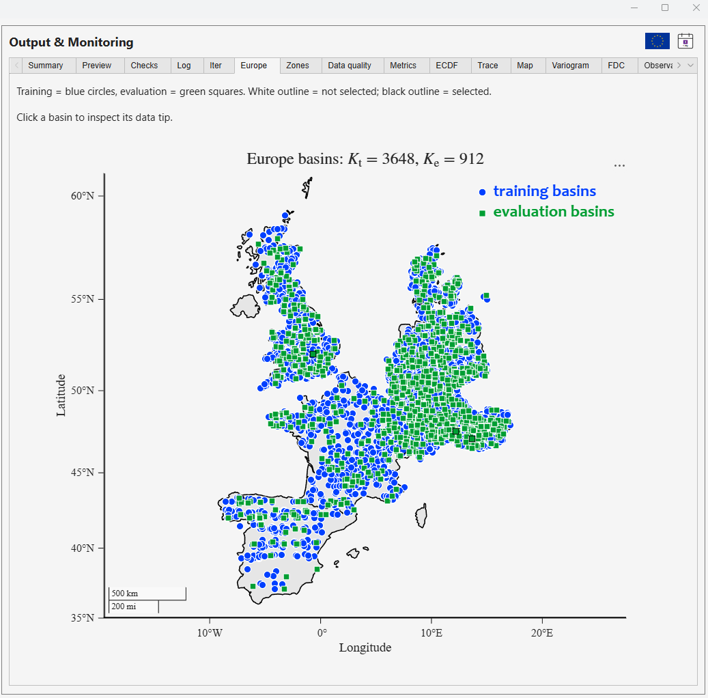
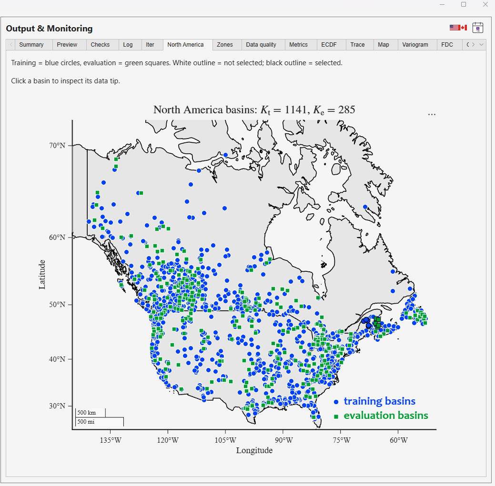

I developed SAGE to make it easier to test hydrologic hypotheses against large-sample datasets, in pursuit of new theory about how catchments store, transmit, and release water. Faster training is useful because it makes more scientific experiments possible. The ultimate aim is a better understanding of how catchments function.
The blog will combine capability extensions—new modules, models, datasets, and options—with project descriptions, practical tutorials, bug fixes, and release notes. I also want to share general observations and research ideas, discuss numerical and modeling choices, and feature applications and questions contributed by users.
My hope is that this blog becomes a place to exchange experiments and questions. If you use SAGE or SITE in your research, I would be interested to hear what you tested, what failed, and what you discovered about catchment behavior. This first post is longer because it introduces the purpose of SAGE and the scope of the blog. Future posts will be much shorter, each focused on one update, experiment, or idea, so they are easier to read and use.
What did the model learn?
We can train an LSTM with tens of thousands of adjustable parameters to obtain excellent predictions of river discharge. But what did it learn about the watershed? Which parts of its behavior reflect storage, connectivity, thresholds, or delayed responses—and which relationships will hold under conditions outside the training data?
Machine learning offers powerful tools for prediction and discovery. My concern is what happens if predictive accuracy becomes the sole measure of progress. Hydrology risks becoming a number-crunching discipline in which improving a score takes precedence over explaining the system that produced the observations.
A scientific discipline needs theory on which it can build. Theory allows us to state assumptions explicitly, derive testable consequences, design experiments that distinguish competing explanations, and revise our understanding when observations contradict it. It also gives us a basis for asking when a relationship should transfer to a new catchment, climate, or time scale.
SAGE as a framework for hypothesis testing
SAGE trains hydrologic models across a collection of basins. It learns a relationship between catchment attributes and model parameters, allowing information from the training basins to inform predictions in other basins. Analytic forward sensitivities provide the gradients used in training.
This makes it practical to express a hypothesis in a model’s equations, compare alternative formulations under aligned conditions, and examine whether their behavior transfers beyond the calibration sample. We might ask whether a different storage–discharge relationship explains recession behavior, whether a delayed response improves the representation of transport, or whether a proposed mechanism remains useful across contrasting catchments.
A good fit alone does not establish that a mechanism is correct. Different models can reproduce similar discharge records. Testing against independent basins and periods, examining model states and fluxes, and using additional observation types where available can provide stronger constraints. SAGE is intended to make that cycle of proposing, testing, rejecting, and refining hypotheses easier. For example, HYD-RESPONSES allows hypotheses to be tested against discharge, snow water equivalent, and soil moisture using the seven built-in models or user_model.
Extending those tests across countries
Most datasets available in SAGE are organized by country, with several countries offering more than one collection. Examples include CAMELS-US, MACH-US, and CAMELSH-US for the United States; CAMELS-KR and CAMELSH-KR for South Korea; and CAMELS-ES and BULL-ES for Spain.
Multi-country training was already possible in v1.0.3 with CAMELS-AT, based on LamaH-CE, which includes Austria and neighboring countries such as Czechia and Hungary. The new CHAMELLION integration brings together European catchments, while the combined CAMELS-SPAT integration covers the United States and Canada. These additions broaden the range of environments available for training and testing hydrologic hypotheses across countries.
These collections allow training and evaluation to span national boundaries within a dataset. Country boundaries are useful for organizing data, but the scientific questions concern differences in climate, soils, geology, topography, and hydrologic response. Does a proposed relationship explain behavior across those differences? Where does it fail, and what might that failure tell us about the processes missing from the model?
Development status: CHAMELLION and the combined US–Canada CAMELS-SPAT integration are additions being prepared for v1.0.4; they are not features of the published v1.0.3 application.




Blue circles show training basins; green squares show evaluation basins. Click either screenshot to view it at full size.
A basin-by-basin benchmark with SITE
SITE calibrates a separate parameter vector for each basin. It provides a complementary benchmark: how well can the same model perform when its parameters are estimated independently for each watershed?
Comparing SAGE and SITE helps us examine the benefits and limitations of learning across basins. The comparison is most informative when the model, observations, time periods, objective function, and numerical settings are aligned. Neither approach establishes a theory by itself; both support experiments that can challenge it.
Making experiments easier to repeat
I developed the graphical interfaces to make these experiments easier to configure, inspect, and repeat. The workflow brings together dataset installation, basin selection, model settings, training or calibration, and diagnostic plots. The computational source is also available for researchers who want to inspect or extend the methods.
Where to begin
Download the application for your operating system from the SAGEhydrology releases or SITEhydrology releases page. Start with a supported dataset and a small experiment before expanding to a larger basin collection. While you explore SAGE’s current capabilities, I am preparing v1.0.4 with AI-assisted modeling and developing two further modules: multi-objective training to explore Pareto trade-offs, and frequentist uncertainty analysis to quantify parameter uncertainty and assess model misspecification.